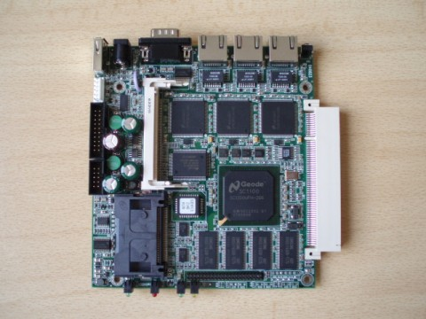
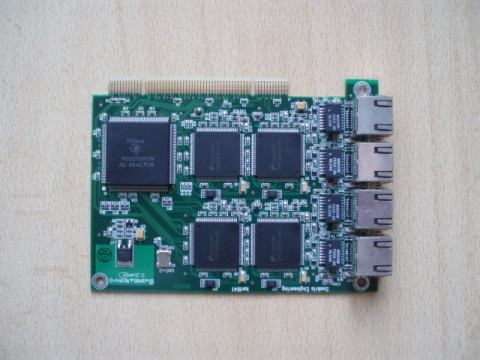
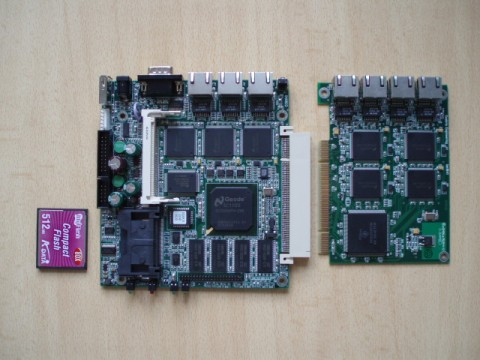
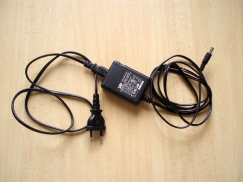
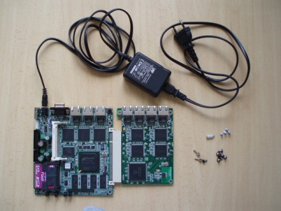
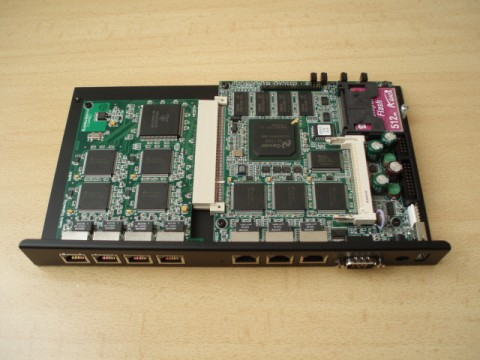
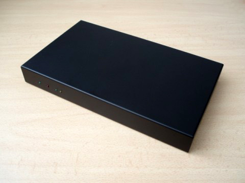
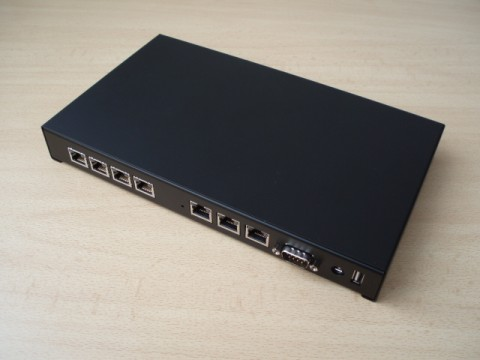
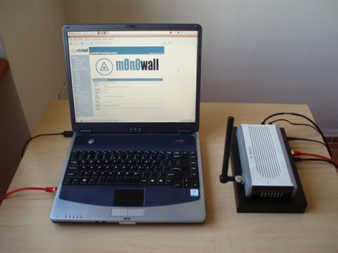

Slovak
SlovakNie je to tak dávno, čo som si u svojho ISP vybavil verejnú IP adresu, ktorá mi však okrem nových možností priniesla aj nové obavy. Priamo adresovateľný počítač je vystavený príliš veľkému riziku a minimálne treba na ňom neustále kontrolovať nastavenia firewallu. O moje linuxové stroje som až taký strach nemal, ale nedala mi spať predstava, že v prípade núdze pripojím firemný “oknoidný” notebook na sieť s verejnou IP adresou. Riešenie bolo jasné – potreboval som sieťový firewall.
Úvod
Hneď v úvode musím upresniť, že pod pojmom sieťový firewall rozumiem osobitný počítač, ktorého hlavnou a často jedinou úlohou je oddeliť vnútornú relatívne bezpečnejšiu sieť od vonkajšej nebezpečnej siete. Nemýľte si teda sieťový firewall s firewallom hostovým, ktorý mnohí nazývajú tiež firewallom personálnym. Viac o firewallových systémoch a ich úlohách pri ochrane sietí sa môžete dočítať v mojej diplomovej práci.
Vo firemnom prostredí by riešenie bolo jednoduché. Niekde do kúta alebo do racku by sa v serverovni umiestnil nový počítač a ním produkovaný hluk by sa strácal v hluku ostatných zariadení. Kto by však chcel, aby ho doma rušil hukot ventilátorov? Riešenie do domácnosti musí byť tiché, musí byť nenáročné na priestor a musí mať čo najmenšiu spotrebu energie. Už dávnejšie som experimentoval s mini-ATX systémami, ktoré síce boli o dosť menšie než bežné PC, no stále na môj vkus zaberali priveľa miesta. Potrebovali tiež klasický počítačový zdroj, ktorý je vždy vybavený ventilátorom. Preto som sa vybral iným smerom a rozhodol som sa skúsiť hardvér z produkcie firmy Soekris Engineering.
Objednávka
Soekris Engineering je menšia firma sídliaca v Kalifornii, ktorá sa špecializuje na návrh a výrobu tzv. “embedded” zariadení. V ponuke tejto firmy nájdeme najmä základné dosky s integrovanými procesormi typu 486 a 586, sieťové karty, ale aj šifrovacie akcelerátory, ktoré pri nasadení vo VPN sieťach odbremeňujú hlavný procesor. Na stránkach belgickej firmy KD85.com, ktorá okrem distribúcie systému OpenBSD do európskych krajín ponúka aj hardvér od Soekris-u, som si objednal všetko potrebné na stavbu firewallu. E-mailom som sa dohodol s majiteľom na platbe bankovým prevodom, ktorú som musel uskutočniť predom. Ihneď po prijatí peňazí druhou stranou mi bol doručený identifikátor zásielky u UPS, s ktorým som mohol na webe sledovať ako môj balík postupuje z Belgicka na Slovensko. Doručenie trvalo tri pracovné dni a keď som od kuriéra v Bratislave preberal balík, podľa webu UPS sa stále nachádzal len v Nemecku. Poučil som sa a druhý krát už tomuto systému sledovania zásielok nebudem venovať pozornosť.
Hardvér
Dorazila ku mne objednaná základná dosku Soekris net4801-60, ktorá je osadená procesorom AMD GEODE pracujúcim na frekvencii 266MHz a má k dispozícii 256 MB SDRAM. Priamo na doske sú tri 10/100 Mbit ethernet rozhrania a čítačka CF kariet. Doska obsahuje jeden štandardný 3.3V PCI port a jeden miniPCI port, ku ktorému je možné pripojiť napríklad wi-fi kartu. Tiež má jeden USB 1.1 port, jedno 44-pinové rozhranie UltraDMA-33 pre pripojenie 2,5” disku a dva sériové porty. Jeden z nich je vyvedený na prednej časti dosky spolu so sieťovými rozhraniami a slúži na pripojenie sériovej konzoly. Preto táto doska nepotrebuje a ani nemá grafickú kartu. K dispozícii je navyše aj hardvérový watchdog, ktorý v prípade zmrznutia systému zabezpečí automatický reštart. Tri sieťové rozhrania na sieťovom firewalle sú vo väčšine prípadov postačujúce, no ja som sa chcel vyhnúť nákupu switch-u, ktorý by ma pripravil o ďalšiu elektrickú zásuvku. Preto som si objednal aj PCI sieťovú kartu Soekris lan1641, ktorá poskytuje štyri nezávislé 10/100 Mbit/s ethernet rozhrania. K doske som si tiež objednal 12V adaptér a plechovú krabicu, ktorú pravdepodobne na mieru vyrába belgický dodávateľ. Ten mi navyše zdarma pribalil aj nálepku s motívom OpenBSD, takže som s jeho službami nadmieru spokojný :)

Obr.1: Základná doska Soekris net4801-60

Obr.2: Sieťová karta Soekris lan1641

Obr.3: Compact Flash karta, Soekris net4801-60 a Soekris lan1641

Obr.4: Napájací zdroj 12V, 1.5A

Obr.5: Kompletná elektronika firewallu

Obr.6: Elektronika osadená v spodnej časti krabice

Obr.7: KD85.com extended case 7 ports s vlastnou povrchovou úpravou

Obr.8: KD85.com extended case 7 ports s vlastnou povrchovou úpravou
Musím ešte dodať, že celý firewall prišiel kompletne zmontovaný a trochu mi vadilo, že na krabici už boli nalepené gumové nožičky. Krabica je dodávaná v surovom stave bez povrchovej úpravy a pri jej striekaní na čierno som musel nožičky násilne odstrániť. Naspäť ich pravdepodobne budem lepiť sekundovým lepidlom.
Softvér
Tento počítač sa ovláda podobne ako napríklad inteligentné switch-e prostredníctvom sériovej konzoly. Ak vám to nič nehovorí, vedzte, že stačí len správnym káblom prepojiť sériový port počítača so sériovým portom vyvedeným na prednej strane firewallu a použiť príslušný komunikačný program. Osobne som počas inštalácie používal program minicom a na systémoch z rodiny Windows je pravdepodobne možné použiť hyperterminal.
Až do samotnej inštalácie som si nebol istý ako sa inštaluje systém na počítač, ktorý nemá pevný disk ale iba CF kartu.
Väčšina návodov, ktoré som našiel na webe počítala s tým, že bude pripojený 2,5” disk.
V takom prípade je inštalácia veľmi jednoduchá.
Disk pripojíte k desktopu a nainštalujete alebo prekopírujete (skúste to spraviť s Windowsom) naň operačný systém, ktorý nakonfigurujete tak, aby používal sériovú konzolu.
V prípade, že sa však ako hlavný disk rozhodnete používať CF kartu, pravdepodobne narazíte na problémy s jej životnosťou.
Tieto karty majú obmedzený počet zápisov - okolo 100 000 u lacnejších kusov.
Priznám sa, že som neskúšal za ako dlho je tento limit dosiahnutý, pretože som si vedomý skutočnosti, že v unixových systémoch neustále na disk zapisuje napríklad syslog daemon a mnohé programy vytvárajú dočasné súbory v adresári /tmp.
Riešenie vidím v modifikácii operačného systému, ktorý by mal súborový systém pripojený len na čítanie a pre prípojné body /var a /tmp by používal ramdisk, no na takúto rozsiahlu modifikáciu bohužiaľ nemám v súčasnosti dostatok voľného času.
Compact Flash karta pripojená len na čítanie má však oproti pevnému disku aj podstatnú výhodu – systém nemusíte bezpečne vypínať.
Zariadeniu stačí odpojiť prívod energie a karta sa nepoškodí.
Napriek už spomínanému nedostatku času som však vyskúšal na CF kartu, ktorú počítač detekuje ako pevný disk, nainštalovať OpenBSD. V biose som nastavil PXE boot zo sieťového rozhrania, ktorému DHCP daemon bežiaci na mojom desktope okrem IP adresy zaslal aj cestu k bootovateľnému obrazu dostupnému na lokálnom TFTP serveri. Po zavedení tohto obrazu sa spustila inštalácia systému, ktorá pokračovala podobne ako pri SparcStation4 štandardným spôsobom z lokálneho FTP servera. Systém bežal bez najmenších problémov a predpokladám, že rovnaká situácia by bola so systémom GNU/Linux. Po niekoľkých neúspešných pokusoch transformácie systému na používanie ramdiskov som sa rozhodol, že skúsim cestu menšieho odporu a vyskúšam firewallový systém m0n0wall.
M0n0wall je operačný systém určený pre “embedded” firewallové systémy.
Základ má vo FreeBSD a ponúka takmer všetko, čo človek od takéhoto systému očakáva.
Poskytuje služby ako DHCP, DNS, VPN s IPsec, SNMP agenta, ale umožňuje tiež používať službu DynDNS, ktorá príde vhod snáď každému, komu ISP prideľuje dynamickú verejnú IP adresu.
Samozrejmosťou je aj zmena MAC adries rozhraní, stavový paket filter, NAT a shapping (rozdeľovanie šírky pásma).
Navyše sa tento systém konfiguruje v prehľadnom webovom prostredí, takže pre skúseného používateľa je kompletná konfigurácia otázkou pár minút.
Inštalácia m0n0wallu na CF kartu je tiež veľmi jednoduchá, potrebujete k nej však počítač s čítačkou týchto kariet.
Z webu projektu stačí stiahnuť obraz karty, ktorý má len 6MB a pomocou utility dd ho zapísať na kartu.
M0n0wall používam na domácom firewalle asi 4 mesiace a nemôžem robiť iné, než ho chváliť.
Nastavenie celého systému sa dá exportovať do jediného XML súboru a obnova konfigurácie je tiež otázkou “pár klikov”.
Jediné, čo v ňom trochu postrádam je OpenVPN, ktoré bolo dostupné v starších verziách.
Po dôvodoch, ktoré viedli autora systému k vypusteniu tohto balíka z poslednej verzie som však zatiaľ bližšie nepátral.

Obr.9: Soekris embedded firewall s OS m0n0wall a Flash-OFDM wireless broadband
Záver
S mojím domácim sieťovým firewallom som nadmieru spokojný. Je malý, má nízku spotrebu a vďaka absencii ventilátorov je aj absolútne tichý. Využil som ho už dokonca aj ako “mobilný” náhradný firewall, keď som potreboval preinštalovať operačný systém na firewalle, ktorý spravujem známemu. Celodennú akciu tak sprevádzal výpadok konektivity menší než jedna minúta. V domácej sieti mi toto zariadenie nahrádza aj switch a odkedy ho mám, nemusím sa báť, či som na desktope odstavil všetky testované služby. Celkové náklady na jeho zadováženie dosiahli takmer 18.000 Sk, čo je na slovenské pomery dosť veľa, no treba brať do úvahy, že sa jedná o “high-end” model a slabšie je možné získať aj za polovicu tejto sumy. Pri slabších modeloch je však treba rátať s nižším výkonom. Autor m0n0wallu na stránkach projektu totiž uvádza, že základné dosky z radu net4501 sú schopné dosiahnuť priepustnosť medzi WAN a LAN rozhraním okolo 17Mbit/s. Môj model dosahuje približne 50-60 Mbit/s, čo mi však s pripojením na internet s rýchlosťou 2Mbit/s viac než postačuje. Ostáva mi len dúfať, že produkty firmy Soekris Engineering si raz nájdu distribútora na Slovensku alebo v Čechách a koncoví používatelia tak ušetria na bankových prevodoch a doprave z Belgicka.